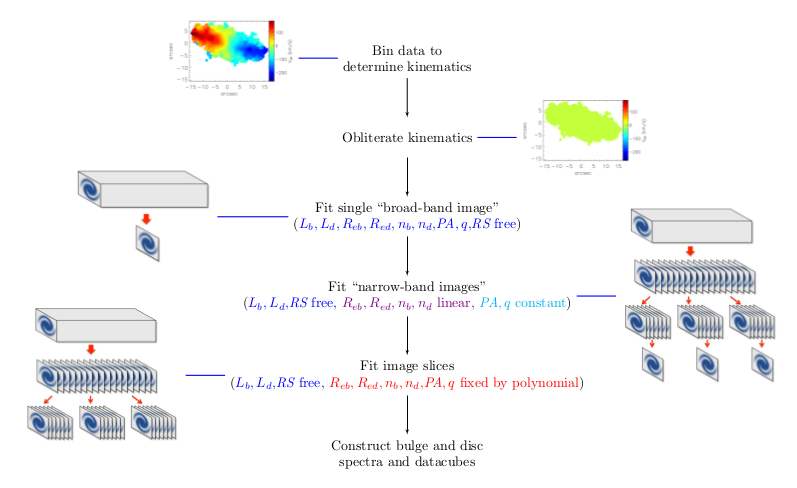

BUDDI
BUDDI (Bulge-Disc Decomposition of IFU data cubes) is a new approach to fit the two-dimensional light profiles of galaxies as a function of wavelength to extract the spectral properties of these galaxies' discs and bulges. The fitting is carried out using GALFITM, a modified form of GALFIT which can fit multiwaveband images simultaneously, and can be used to model any components within the galaxy that can be modelled by GALFIT. The benefit of this technique over traditional multiwaveband fits is that the stellar populations of each component can be constrained using knowledge over the whole image and spectrum available. The decomposition has been developed using commissioning data from the Sloan Digital Sky Survey-IV Mapping Nearby Galaxies at APO (MaNGA) survey, but can be applied to any IFU data of a nearby galaxy with similar or better spatial resolution and coverage. For example, it has been used to extract the spectra of an extended stellar halo around the cD galaxy NGC3311, the nuclear star clusters at the cores of dwarf galaxies in Fornax, and the bulges, discs and lenses within S0s using MUSE data.
At the current time, it has only been tested properly with MUSE and MaNGA data, and the user manual is still being written. The code is written in IDL. If you would like access to the code, please email me for the link to the Github repository. If you use BUDDI in your work, please cite this paper and the link to the code in the ASCL (to be defined).
